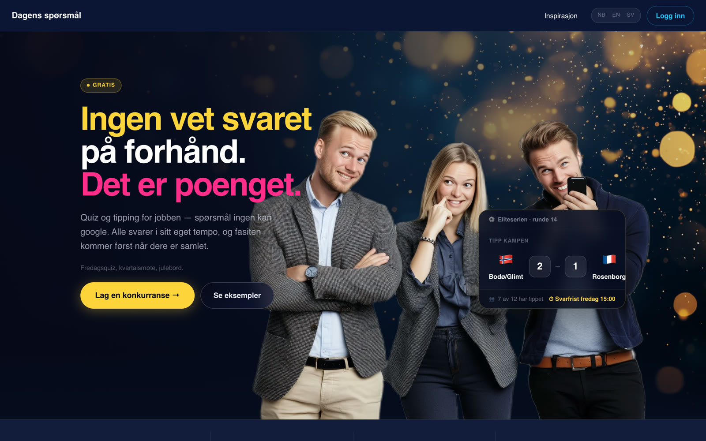
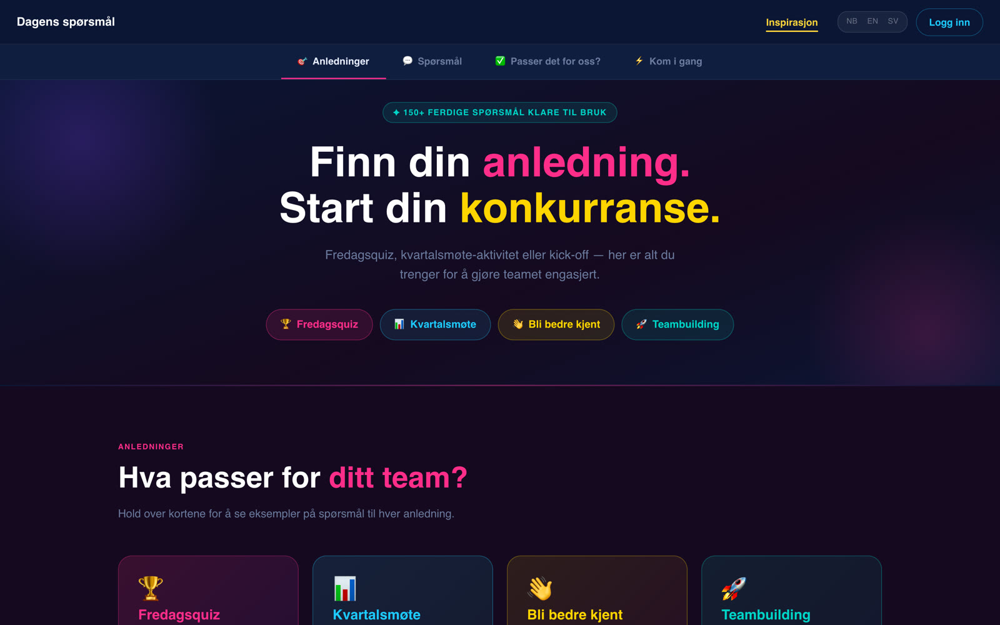

dagens.app
En quiz- og tippeapp for norske team. Her er hva jeg gjorde og hva jeg lærte.

Hvordan får du folk til å komme tilbake, uke etter uke?
De fleste teamquizer avsluttes etter én kveld, og så skjer det ikke mer. Jeg ville løse et annet problem: å skape en vane som teamet holder i gang selv, uten at noen må følge opp.
Løsningen ble en konkurranse som varer over tid. Teamet svarer på nye spørsmål, samler poeng og følger en ligatabell. Spørsmålene er laget slik at svaret ikke kan søkes opp, og fasiten kommer først når alle har svart. Samtalen kommer da før svaret, og det er der samholdet bygges.
Hele appen, fra idé til drift
- Definertebehovet: en enkel konkurranse for fredagsquiz, kvartalsmøter og team som aldri er på samme sted.
- Designetopplevelsen slik at den er klar på to minutter: opprett, del en lenke, og teamet er i gang.
- Bygget innen grunn til å komme tilbake: ukentlig rytme, poeng, ligatabell og kåring av kvartalets quiz-mester.
- Skrevover 150 ferdige spørsmål sortert etter anledning, og gjorde det mulig å bruke egne KPI-er som spørsmål.
- Byggetappen med Lovable og Supabase, med GitHub til koden, på norsk, engelsk og svensk, installerbar på mobilen.
- Satte oppAPI-er som henter inn kamper og resultater for VM 2026 og Eliteserien, og som deler ut poeng automatisk.
- Satte oppsamtykke for statistikk og annonser, og informasjon om hva som skjer med svarene.
VM-tipping
VM-tippingen fungerte. Jeg satte opp API-er som hentet inn kamper og resultater, og appen delte ut poeng til deltakerne automatisk.
Klar på to minutter
Opprett en konkurranse
Velg blant over 150 ferdige spørsmål, eller lag egne tilpasset teamet.
Del lenken
Kopier lenken og del den i Teams, Slack eller på e-post. Teamet kan starte umiddelbart.
Teamet gjetter og diskuterer
Hvem tror på hvem? Debatten starter før fasiten er klar.
Sesongpoeng
Poeng bygges opp uke for uke, og laget kårer kvartalets quiz-mester.

Inspirasjonssiden: ferdige spørsmål sortert etter anledning.
Appen på mobil. Trykk for å spille av videoen.
Det er mye som kan gå galt
Programmene du trenger
Hvilke programmer og verktøy som må på plass for at en app skal fungere.
Hvor mye jobb det er
Det ligger mye arbeid bak noe som skal fungere automatisk.
Stegene i kundereisen
En kundereise har mange steg på den tekniske siden, og hvert steg må fungere.
Det som kan gå galt
Mye kan gå galt underveis, og det må kunne løses raskt.
Utfordringer
Det vanskeligste var å tenke gjennom alt i forkant. Det gjaldt særlig VM, der appen skulle hente kamper og resultater og dele ut poeng automatisk.
VM kunne ikke testes på forhånd. Feil dukket derfor opp underveis, og jeg løste dem fortløpende.
Hva jeg satt igjen med
Jeg satt igjen med dypere kunnskap om hvor krevende det er å sette opp noe som skal fungere automatisk, og hvor mye som kan gå galt.
Jeg lærte også at man må tørre å starte uten å ha alle svarene på forhånd. Uten det blir det ingen fremdrift. Feil oppstår underveis, og de må løses fortløpende.
Folk har forståelse for at feil kan oppstå. Det viktigste er å løse dem raskt.
La oss ta en prat
Send meg en e-post eller en melding på LinkedIn, så tar vi det derfra. Jeg bor i Fredrikstad og tar oppdrag for hele Norge, på nettet eller på stedet.